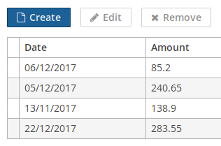

3.5.2.1.3. 按钮
当用户点击一个按钮，就会执行一个操作。

该组件对应的 XML 名称： button
按钮上可以有标题、图标、或者两者皆有。下面这个图列举了一些不同类型的按钮。
下面是从本地化消息包获取文本显示到按钮和提示上的例子：
<button id="textButton" caption="msg://someAction" description="Press me"/>按钮上的标题是用 caption 属性来设置，弹出提示用 description 来设置。
如果 disableOnClick 属性设置成 true 这个按钮在点击之后就会变成不可点击的状态，主要用来防止多次（意外的）点击这个按钮。之后可以通过调用 setEnabled(true) 把按钮恢复成可点击状态。
创建带有图标的按钮的例子：
<button id="iconButton" caption="" icon="SAVE"/>按钮的主要功能是在点击的时候执行一个动作（action）。点击之后调用的控制器方法可以通过 invoke 属性来定义。这个属性的值需要是控制器的方法名，这个方法需要满足下面的条件：
-
方法应该是
public。 -
方法返回值是
void。 -
方法不能有任何参数, 或者只能有一个
Component组件类型的参数。 如果方法带有Component参数, 那么这个组件就是调用此方法的按钮实例。
以下是按钮调用 someMethod 的例子：
<button invoke="someMethod" caption="msg://someButton"/>在界面控制器里需要定义名称为 someMethod 的方法：
public void someMethod() {
//some actions
}如果设置了 action 属性，那么就会忽略 invoke 属性。action 属性包含了按钮中相应操作的名称。
带有 action 属性的按钮的例子:
<actions>
<action id="someAction" caption="msg://someAction"/>
</actions>
<layout>
<button action="someAction"/>
</layout>实现了 Component.ActionsHolder 接口的组件中的任何操作都可以指定给按钮。表格、 分组表格、 树形表格、 树中的操作都可以指定给按钮。有两种添加操作的方法，一种是在 XML 描述中以声明的方式添加，另一种是在界面控制器里以编程的方式添加，这两种方式没有区别。不管使用哪种方式，在使用操作的时候，组件的名称和操作的标识符必须定义在 action 属性中，并且它们之间用 . 分隔。比如，下面的例子中，将 coloursTable 的 create 操作指定给一个按钮：
<button action="coloursTable.create"/>按钮的操作也可以通过编程创建，方法是在界面控制器中创建继承自BaseAction的类。
|
如果给 如果 |
- 按钮样式
-
primary属性用来将按钮设置为高亮显示，默认情况下，如果这个按钮调用的操作的primary属性为true，这个按钮会被设置为高亮显示。<button primary="true" invoke="foo"/>这个高亮样式在 Hover 主题中是默认开启的；如果希望在 Halo-based 主题中使用 primary 样式，可以通过设置
$cuba-highlight-primary-action样式变量为true来开启。接下来，在使用了 Halo-based 主题的 Web Client 里，可以通过
stylename属性来给按钮组件设置一些预定义的样式，可以通过 XML 或者编程的方法设置：<button id="button" caption="Friendly button" stylename="friendly"/>如果使用编程的方式来设置样式, 可以直接用
HaloTheme主题类里面的以BUTTON_开头的一些主题常量：button.setStyleName(HaloTheme.BUTTON_FRIENDLY);
- 按钮的属性
-
action - align - caption - captionAsHtml - css - description - descriptionAsHtml - disableOnClick - enable - box.expandRatio - icon - id - invoke - stylename - tabIndex - visible - width
- 按钮预定义的样式
-
borderless - borderless-colored - danger - friendly - huge - icon-align-right - icon-align-top - icon-only - large - primary - quiet - small - tiny